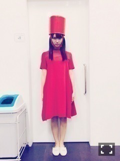

| 2016/01 27 Wed | ひめたん-0o0-その608 |
タイトルのナンバリングを
長いこと間違えてたね。
コメント読んでて気がつきました
ご指摘ありがとう( >_< )
この前やっと600いったってのにねぇ。
大人への近道MVの時の。
あれからもう4ヶ月半か、早いな～
前回の乃木坂工事中は
身内モノマネ大会後編でした♪
食べ方はね～ほんとによく
みんなから言われるんだけどね
まったく自覚がないんですよ( ´ ･ω･ ` )
あのオンエアのあとで
愛未ちゃんと食事に行ったんだけど
めっちゃ注目されて
それはそれは食べ辛いですよ。笑
でも、あんなふうに真似してくれるの
悪い気はしないですね。ふふ。
普段から陽菜ちゃんや愛未ちゃんはよく
私の真似をしてくれるんですよ～
私自身には似てるか似てないのか
もはやわからないんだけれど
よかったら振ってみてくださいね！
あ、ちーちゃんも
よく真似してくれてる！多分上手！
日曜の夜はらじらー！サンデー
次回のゲストは声優アーツに
林勇さん、太田雅友さん。
乃木坂から生田絵梨花ちゃんが登場します。
今週のメールテーマは
◯HMK ERKって何の略？
◯ポジティブ"転調"対決！
はあ～宣伝ですか、なるほど。笑
いくちゃんへの応援メッセージや
リクエストソング、
レギュラーコーナーへの投稿も
お待ちしています！
おたよりの宛先はこちら。
毎週金曜日ソニレコ配信！
1月は金曜日が5回ある故に
明後日は1月5週目分が配信されます！
なるほど、そーゆー仕組みなんだね
ソニレコのこと
だんだんわかってきたぞ(・∀・)b
今月のお当番は伊藤純奈ちゃんです
今出てる最新回はもう観てくれたかな？

この写メの私、若干ムッとしてます
ハムスターみたいな顔ってよく言われるけど
この私はちょっと分かる気がする。
ツインテール懐かしいな～
次回のソニレコはどんな髪型しようかな。
金曜はサイン会、土曜は握手会ですね～
イベント続きだね！
来てくれるみなさんよろしくね♪
特典イベントってちょっと
久々な気がする( ˆωˆ )
個別握手会もいろんなお話聞きたいな
土曜日ってなんか新鮮だね～
楽しみに待ってるね♡
なんか週末はちょっと
お天気が崩れるみたいなので
みなさん気をつけてきてね。
これ1年前くらいのお茶会の時！
～お知らせ～
2/6 トップエール
連載第4回目です( ˆωˆ )
今回も新しいことに挑戦してきました！
ヒントはトップエールさんの
公式ツイッターに写真載ってたよ～
2/9 ボム
寺田、渡辺、中元で撮って頂きました
いや～こんな若くてキラッキラなふたりと
先輩並べないよ～( ˆωˆ )笑
3人の共通点や1対1の関係性が見えるかな？
2/10 マーキー
永島、中田、堀、寺田、山崎、中元で
アンダーライブ武道館を振り返りました。
せいらりんが卒業のことを語っていたので
それもたっぷり載ると思います( ˆωˆ )
他にも告知したいことがありますが
もうちょっと先になるかな？
お楽しみに。
昔の写メを漁ってたんだけど
私これ貼ったっけ？
記憶が曖昧で......
貼ってたらごめん( >_< )

13th個人PVのオチです。
(＊´・ω・＊)
コメント(2413)
2016/01/27 23:42